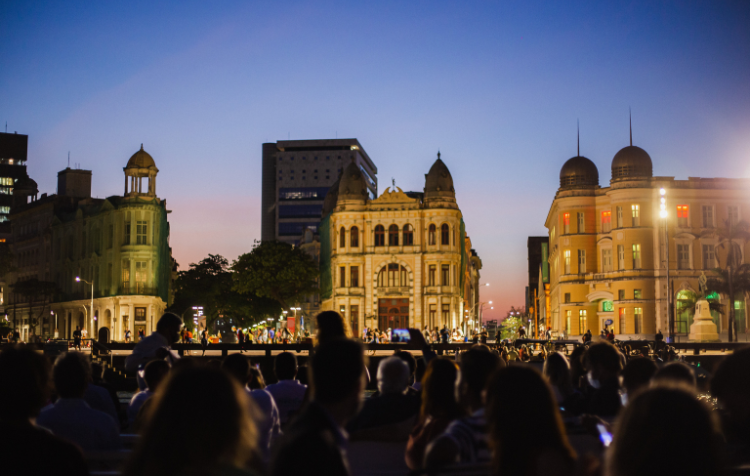
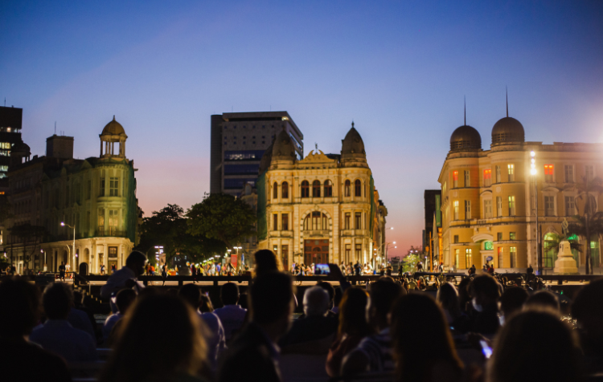

PRAÇA DO MARCO ZERO!
Localizada no coração do Recife, a Praça do Marco Zero é um lugar emblemático com uma rica história e uma atmosfera vibrante. Aqui estão alguns detalhes fascinantes sobre este lugar especial:
A Praça, originalmente denominada Praça Barão do Rio Branco, recebeu o apelido de Marco Zero devido ao fato de abrigar o quilômetro zero das estradas de Pernambuco. Destaca-se no centro da praça um marco de cor vermelha doado pelo Clube do Automóvel, simbolizando esse importante marco geográfico. Ao seu redor, você encontrará a imponente estátua do Barão do Rio Branco em bronze, esculpida por Felix Charpentier, com 2,80m de altura. No centro da praça, não deixe de admirar a bela rosa dos ventos do renomado pintor Cícero Dias.
Durante o Carnaval, a Praça do Marco Zero se transforma em um verdadeiro quartel general do carnaval multicultural do Recife, repleto de energia e celebração.
Dicas adicionais para explorar:
Enquanto estiver aqui, não se esqueça de tirar uma foto com os dois marcos históricos - o antigo e o novo, e apreciar a deslumbrante vista para o Parque de Esculturas, bem como os majestosos edifícios do Centro Cultural da Caixa e da Associação Comercial de Pernambuco.
Para os entusiastas das compras, uma visita ao novo Mercado de Artesanato, situado nas proximidades, é uma experiência imperdível, oferecendo uma variedade de produtos artesanais locais para você explorar e levar para casa como lembrança desta visita memorável.
Esperamos que desfrute da sua visita à Praça do Marco Zero e que leve consigo memórias inesquecíveis desta icônica e histórica praça no coração do Recife.
FOTOS:

 
